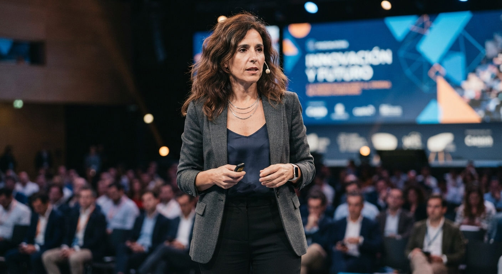

Cátedra de métrica y verso
Marcos Benítez
Recital sonoro y conferencia abierta: «La respiración del verso en el paisaje castellano».
Ejercicios de poda sintáctica y resonancia…
Viernes 17, 16:00 h
Claustro de los Naranjos

Cátedra de métrica y verso
Recital sonoro y conferencia abierta: «La respiración del verso en el paisaje castellano».
Ejercicios de poda sintáctica y resonancia…
Viernes 17, 16:00 h
Claustro de los Naranjos
Novela contemporánea
Lee el primer capítulo de su última novela.
Una conversación sobre el narrador y el silencio.
Sábado 18, 11:00 h
Sala de los Espejos
Poesía hispánica
Diálogo sobre el verso libre y la métrica.
Lectura de poemas inéditos del último ciclo.
Sábado 18, 13:00 h
Patio de las Higueras
Edición independiente
Cómo se construye un catálogo pequeño.
Del manuscrito a la librería de barrio.
Sábado 18, 17:30 h
Biblioteca del Claustro
Relato breve
Taller de arranque, corte y final.
Tres ejercicios a partir de un objeto.
Domingo 19, 10:30 h
Aula de escritura
Crítica literaria
La reseña como lectura, no como veredicto.
Un recorrido por la poesía reciente.
Domingo 19, 12:30 h
Sala de actos